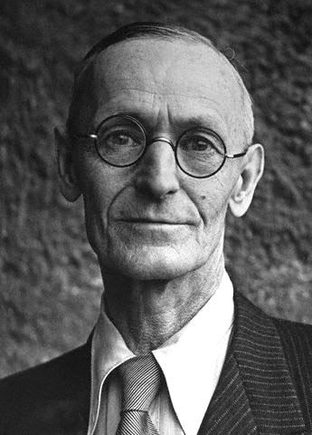

BIOGRAFIA DEL AUTOR
Hesse nació en Calw, Alemania, el 2 de julio de 1877, y falleció el 9 de agosto de 1962 en Montagnola, Suiza.Hesse creció en una familia religiosa y estricta, lo que influyó en su obra. Abandonó la escuela a una edad temprana y se dedicó a la lectura y la escritura. A los 17 años, Hesse comenzó un aprendizaje de relojero, pero lo dejó después de unos meses para trabajar como librero. En 1899, publicó su primera colección de poemas, "Canciones de un Viajero", y en 1904 publicó su primera novela, "Peter Camenzind". Sin embargo, fue con la publicación de "Demian" en 1919 y "Siddhartha" en 1922 que alcanzó la fama internacional. "Lobo Estepario", publicado en 1927, es una de sus obras más famosas y considerada una de las obras maestras de la literatura alemana del siglo XX. En ella, Hesse explora temas como la soledad, la alienación, la búsqueda de la identidad y la naturaleza dual del ser humano. Durante su vida, Hesse fue galardonado con numerosos premios literarios, incluido el Premio Nobel de Literatura en 1946. Además de su obra literaria, Hesse también fue un pacifista y un humanista comprometido, y sus ideas políticas y filosóficas se reflejan en su obra.

MÁS LIBROS DEL AUTOR
| Nombre del Libro |
Sinopsis |
| Siddhartha |
Cuenta la historia de Siddhartha, un joven que abandona su vida cómoda y privilegiada en busca de la verdad y la iluminación. A lo largo de su viaje, Siddhartha experimenta diversas enseñanzas y desafíos, y finalmente encuentra la paz interior que ha estado buscando. |
| El lobo estepario |
El protagonista, Harry Haller, se siente atrapado entre dos mundos: el de los burgueses conformistas y el de los marginados rebeldes. |
| Demian |
Un joven llamado Emil Sinclair. A través de su amistad con Max Demian, Emil se introduce en un mundo de espiritualidad y autoconocimiento, pero también se enfrenta a la oscuridad y la incertidumbre |
| Narciso y Goldmundo |
Narciso y Goldmundo, que representan la dualidad entre el intelecto y la sensualidad. Goldmundo, el más apasionado de los dos, busca constantemente la belleza y la emoción a través de sus relaciones amorosas, mientras que Narciso busca la iluminación a través de la contemplación y la meditación. |
| El juego de los abalorios |
A través de la narración de la vida de Joseph Knecht, un maestro de la Orden de Castalia, Hesse presenta una visión utópica de la sociedad basada en la educación, el conocimiento y la sabiduría. |